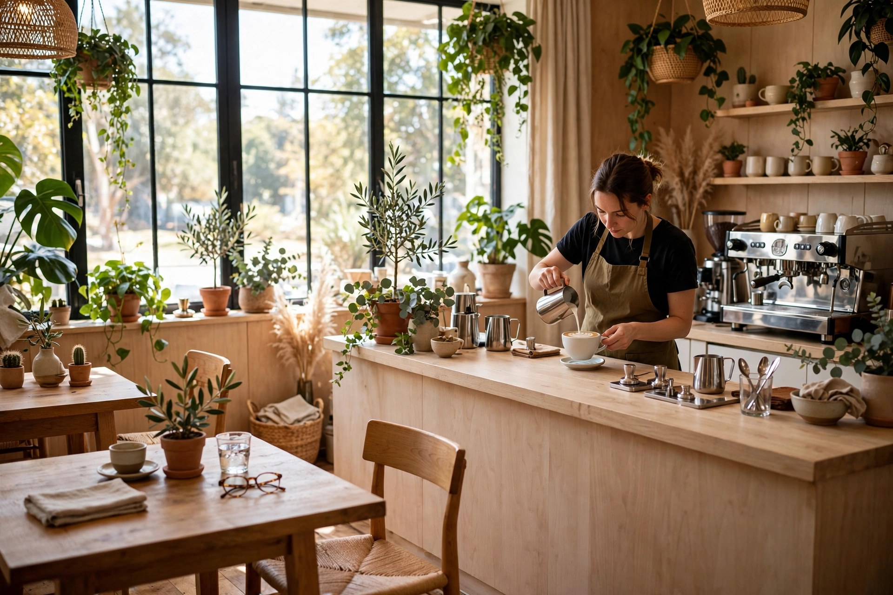
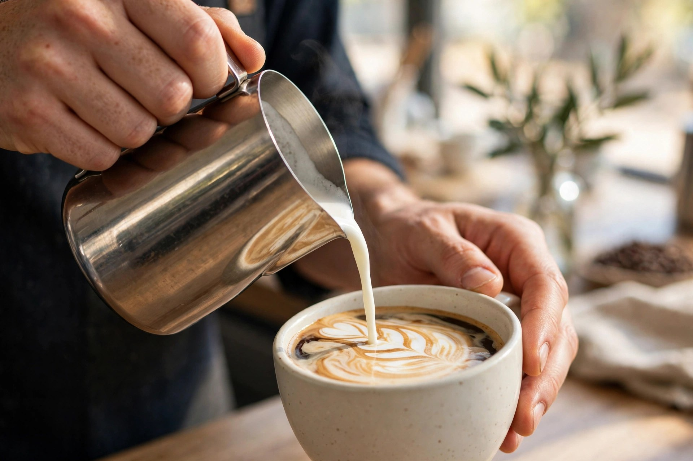
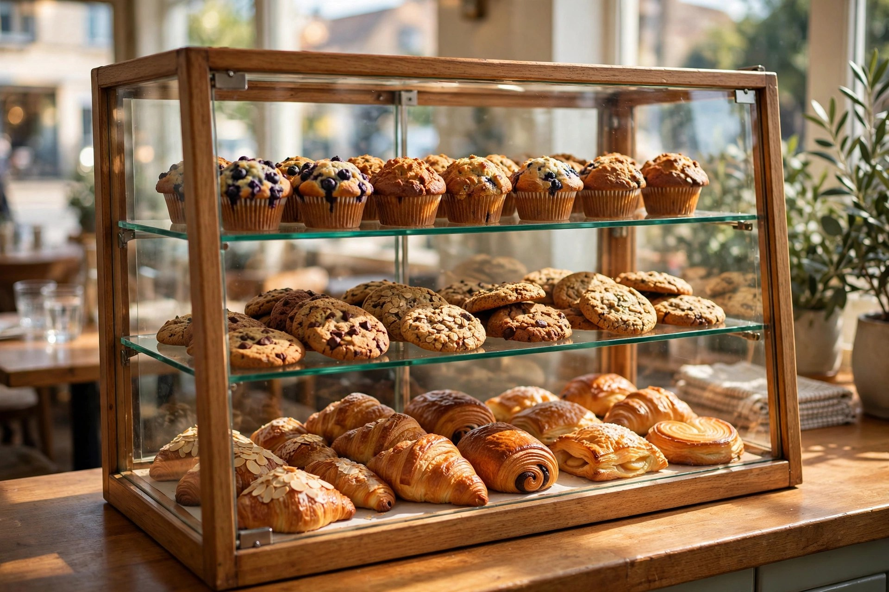
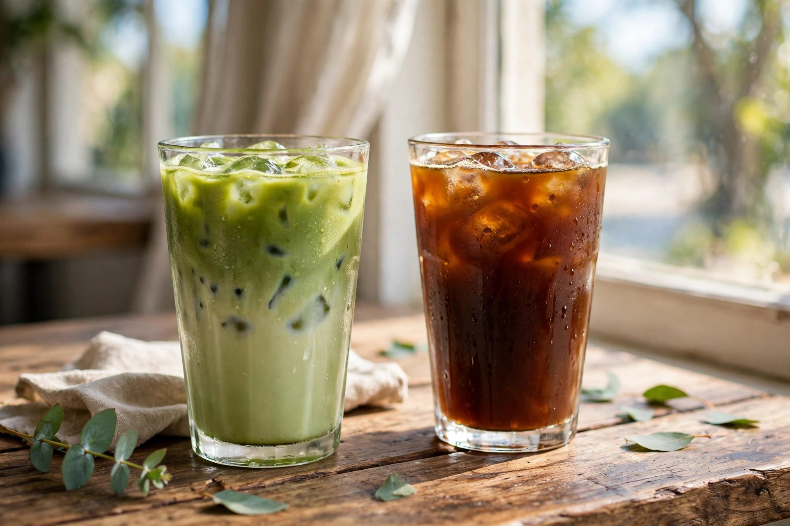

Cafés de spécialité
Lattes, cappuccinos et mochas maison, préparés avec des grains de haute qualité — au lait d'avoine ou de soya.

Vieux-Longueuil, Québec · Café de spécialité depuis 2017
Cafés artisanaux, pâtisseries maison et options véganes — dans une ambiance chaleureuse, sur la rue Saint-Charles. Note de 4,9/5 sur Google (62 avis).
Notre menu
Lattes, cappuccinos et mochas maison, préparés avec des grains de haute qualité — au lait d'avoine ou de soya.
Matcha glacé, café-limo et autres créations glacées — les préférées des habitués.
Muffins, biscuits, brownies et viennoiseries — une sélection alléchante préparée maison.
Une offre majoritairement végane et sans gluten, bien identifiée — facile de s'y retrouver.
Sandwiches, burritos déjeuner et salades maison — sur place ou à emporter.
Des grains de café de très bonne qualité à rapporter à la maison.

Pourquoi nous choisir
Fondé en 2017 dans le Vieux-Longueuil, le N Latté est aujourd'hui tenu par un père et sa fille, dans la continuité de ce qui a toujours fait sa force : la chaleur humaine et l'amour du bon café.
En images


Ils en parlent
Bon à savoir
Lundi 8 h à 16 h 30, mardi 7 h à 16 h 30, mercredi à vendredi 8 h à 16 h 30, samedi et dimanche 8 h 30 à 16 h 30.
Oui — notre offre est majoritairement végane et sans gluten, et tout est clairement identifié.
Bien sûr — tout le menu est disponible sur place ou à emporter. Appelez-nous au (450) 876-1096.
Au 247, rue Saint-Charles Ouest, dans le Vieux-Longueuil (QC J4H 1E1).
Venez nous voir